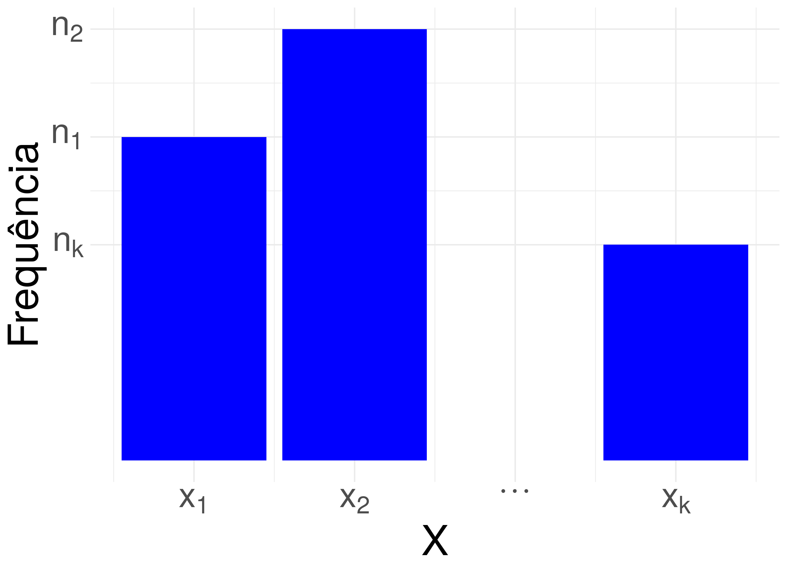
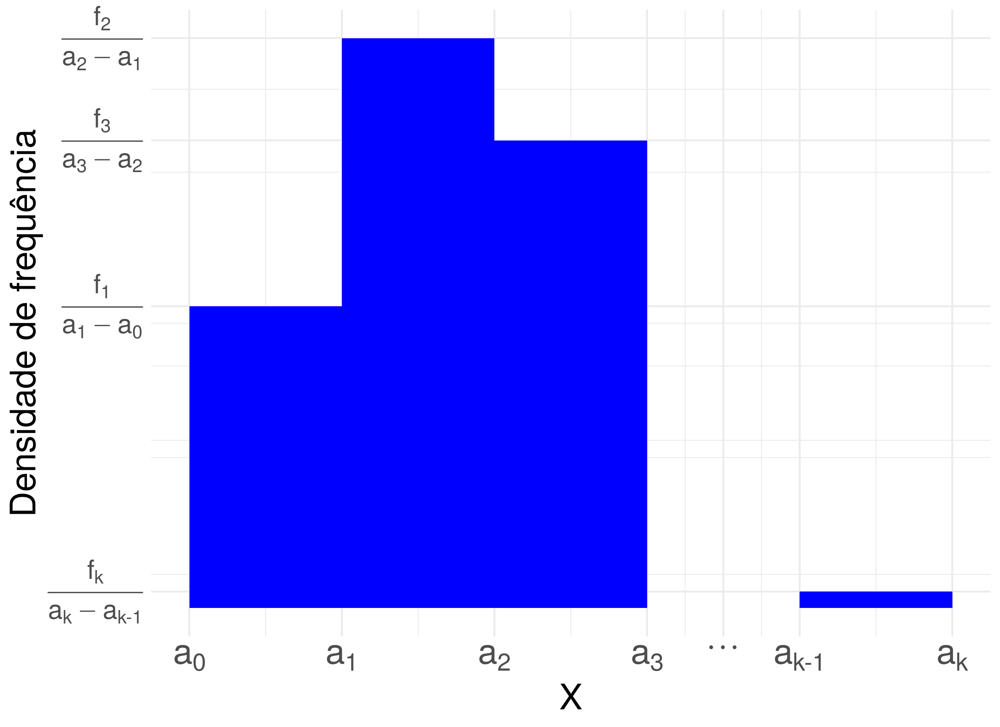
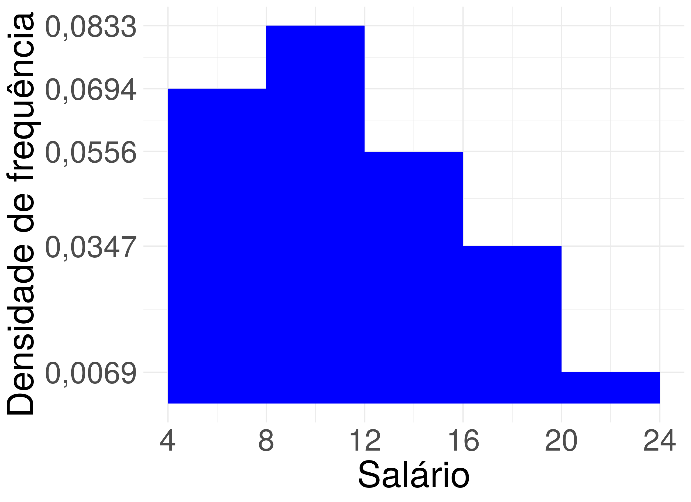

E como calcular medidas de resumo quando temos um gráfico de barras ou histograma?
Com um gráfico de barras e um histograma, você tem uma ideia da distribuição dos dados. Mas e se você deseja encontrar um ou alguns números que representam ou resumem fidedignamente os valores representados nestes gráficos? Para encontrar estes números podemos usar medidas de resumo, e se você tem o conjunto de dados que foi usado para construir estes gráficos essa tarefa é simples em softwares como o R, Python ou até um software de planilha como o excel. E se você tem apenas o gráfico de barras ou histograma e não tem o conjunto de dados? Don’t panic, mesmo nesse caso conseguimos calcular medidas de resumo, e é isso que eu vou explicar como fazer neste post.
Gráfico de barras
Imagine que você tem um gráfico de barras para uma variável quantitativa discreta $X$ com valores observados $x_1, \dots, x_k$, conforme a figura abaixo.
Cada valor observado $x_i, i=1, \dots, k$ do gráfico acima tem uma barra com altura $n_i,i=1, \dots, k$1. Logo, usando esta altura, que é igual a frequência, podemos construir a tabela de distribuição de frequência abaixo.
| $X$ | Frequência | Frequência relativa (proporção) | Porcentagem |
|---|---|---|---|
| $x_1$ | $n_1$ | $f_1 = \frac{n_1}{n}$ | $100\cdot f_1\%$ |
| $x_2$ | $n_1$ | $f_2 = \frac{n_2}{n}$ | $100\cdot f_2\%$ |
| $x_3$ | $n_3$ | $f_3 = \frac{n_3}{n}$ | $100\cdot f_3\%$ |
| $\vdots$ | $\vdots$ | $\vdots$ | $\vdots%$ |
| $x_k$ | $n_k$ | $f_k = \frac{n_k}{n}$ | $100\cdot f_k\%$ |
| Total | $n = n_1+\cdots+n_k$ | $1 \approx f_1 + \cdots + f_k$ | $100\% \approx 100\cdot f_1 + \cdots + 100 \cdot f_k$ |
Para calcular as medidas de resumo, note que o valor $x_i$ aparece $n_i$ vezes para $i=1, \dots, k$. Aqui vamos calcular a média, desvio padrão e a mediana. Para calcular a média, somamos todos os valores e dividimos pelo tamanho da amostra, e para calcular o desvio padrão somamos todos os desvios ao quadrado2 e dividimos pelo tamanho da amostra subtraído por um e em seguida tiramos a raiz quadrada deste valor. Então podemos usar a frequência da tabela de distribuição de frequência como descrito na equação abaixo para calcular a média e o desvio padrão. $$ \begin{split} \bar{x} &= \frac{\overbrace{x_1+ \cdots + x_1}^{n_1\mbox{ vezes}} + \cdots + \overbrace{x_k+ \cdots + x_k}^{n_k\mbox{ vezes}}}{n}\newline &= \frac{n_1 \cdot x_1 + \cdots + n_k \cdot x_k}{n}\newline dp(x) &= \sqrt{Var(x)}\newline &= \sqrt{\frac{\overbrace{(x_1 - \bar{x})^2+ \cdots + (x_1 - \bar{x})^2}^{n_1\mbox{ vezes}} + \cdots + \overbrace{(x_k - \bar{x})^2+ \cdots + (x_k - \bar{x})^2}^{n_k\mbox{ vezes}}}{n-1}}\newline &= \sqrt{\frac{n_1\cdot(x_1 - \bar{x})^2 + \cdots + n_k \cdot (x_k - \bar{x})^2}{n-1}} \end{split} $$
Para calcular a mediana, precisamos calcular as estatísticas de ordem $x_{(i)}$, em que $x_{(i)}$ é o $i$-ésimo menor número. Imagine que $x_1$ é o menor número da amostra, então os $n_1$ menores valores são todos iguais a $x_1$: $x_{(1)} = x_{(2)} = \cdots = x_{(n_1)} = x_1$. Suponha que $x_2$ é o segundo menor valor da amostra, então os $n_2$ menores valores (depois de $x_1$) são todos iguais a $x_2$: $x_{(n_1+1)} = x_{(n_1+2)} = \cdots = x_{(n_1+n_2)} = x_2$. Imagine agora que $x_3$ é o terceiro menor valor da amostra, então os menores valores (depois de $x_1$ e $x_2$) são todos iguais a $x_3$: $x_{(n_1+n_2+1)} = x_{(n_1+n_2+2)} = \cdots = x_{(n_1+n_2+n_3)} = x_3$. E continuamos neste processo até organizar todos os valores observados da amostra do menor até o maior valor como indicado na tabela abaixo. Note que estamos usando a frequência $n_1$, $n_2$ até $n_k$ da tabela distribuição de frequências.
| Estatística de ordem |
|---|
| $x_{(1)} = x_{(2)} = \cdots = x_{(n_1)} = x_1$ |
| $x_{(n_1+1)} = x_{(n_1+2)} = \cdots = x_{(n_1+n_2)} = x_2$ |
| $x_{(n_1+n_2+1)} = x_{(n_1+n_2+2)} = \cdots = x_{(n_1+n_2 + n_3)} = x_3$ |
| $\vdots$ |
| $x_{(n_1+n_2 + n_3+ \cdots + n_{k-1}+1)} = x_{(n_1+n_2 + n_3+ \cdots + n_{k-1}+2)} = \cdots = x_{(n_1+n_2 + n_3+ \cdots + n_{k-1}+ n_k)} = x_k$ |
Então a mediana é calculada do jeito tradicional usando a equação abaixo. $$ md(x) = \frac{x_{\left(\lceil(n+1)\cdot 0.5\rceil \right)} + x_{\left(\lfloor(n+1)\cdot 0.5\rfloor \right)}}{2} $$
em que $\lfloor \cdot \rfloor$ é a função arredonda para baixo e $\lceil \cdot \rceil$ é a função arredonda para cima. Por exemplo, $\lfloor 1,2 \rfloor = 1$, $\lfloor 1,76 \rfloor = 1$, $\lceil 1,2 \rceil = 2$ e $\lceil 1,76 \rceil =2$.
Exemplo
Considere o gráfico de barras da variável Número de filhos de um conjunto de $36$ funcionário da Companhia MB representado na figura abaixo.
Note que a barra que corresponde a zero filhos tem altura $20$ e frequência $20$, a barra que corresponde a um filho tem altura $5$ e frequência $5$, a barra que corresponde a dois filhos tem altura $7$ e frequência $7$, a barra que corresponde a três filhos tem altura $3$ e frequência $3$, a barra que corresponde a quatro filhos tem altura $0$ e frequência $0$ e a barra que corresponde a cinco filhos tem altura $1$ e frequência $1$. Consequentemente, temos a seguinte tabela de distribuição de frequências.
| Número de filhos | Frequência | Frequência relativa (proporção) | Porcentagem |
|---|---|---|---|
| $0$ | $20$ | $\frac{20}{36} = 0,5556$ | $0,5556 \cdot 100 = 55,56\%$ |
| $1$ | $5$ | $\frac{5}{36} = 0,1389$ | $0,1389 \cdot 100 = 13,89\%$ |
| $2$ | $7$ | $\frac{7}{36}=0,1944$ | $0,1944 \cdot 100 = 19,44\%$ |
| $3$ | $3$ | $\frac{3}{36}=0,0833$ | $0,0833 \cdot 100 = 8,33\%$ |
| $4$ | $0$ | $\frac{0}{36} =0$ | $0 \cdot 100 = 0\%$ |
| $5$ | $1$ | $\frac{1}{36} = 0,0278$ | $0,0278 \cdot 100 = 2,78\%$ |
| Total | $36$ | $1$ | $100$ |
$$ \begin{split} \bar{x} &= \frac{20 \cdot 0 + 5 \cdot 1 + 7 \cdot 2 + 3 \cdot 3 + 0 \cdot 4 + 1 \cdot 5}{36} = 0,92.\newline dp(x) &= \sqrt{\frac{20 \cdot (0 - 0,92)^2 + 5 \cdot (1 - 0,92)^2 + 7 \cdot (2 - 0,92)^2 + 3 \cdot (3 - 0,92)^2 + 0 \cdot (4 - 0,92)^2 + 1 \cdot (5 - 0,92)^2}{35}}\newline &= 1,25. \end{split} $$
Para calcular a mediana, primeiro precisamos encontrar as estatísticas de ordem.
| Estatísticas de ordem |
|---|
| $x_{(1)}=x_{(2)}=\cdots=x_{(20)}=0$ |
| $x_{(21)}=x_{(22)}=x_{(23)}=x_{(24)}=x_{(25)}=1$ |
| $x_{(26)}=x_{(27)}=x_{(28)}=x_{(29)}=x_{(30)}=x_{(31)}=x_{(32)}=2$ |
| $x_{(33)}=x_{(34)}=x_{(35)}=3$ |
| $x_{(36)} = 5$ |
Então a mediana é dada por
$$ \begin{split} md(x) &= \frac{x_{\left(\lfloor \frac{n+1}{2} \rfloor\right)} + x_{\left(\lceil \frac{n+1}{2} \rceil\right)}}{2}\newline &= \frac{x_{\left(\lfloor \frac{36+1}{2} \rfloor\right)} + x_{\left(\lceil \frac{36+1}{2} \rceil\right)}}{2}\newline &= \frac{x_{\left(\lfloor 18,5 \rfloor\right)} + x_{\left(\lceil 18,5 \rceil\right)}}{2}\newline &= \frac{x_{\left(18\right)} + x_{\left(19\right)}}{2}=0\newline \end{split} $$
Histograma
O histograma é um gráfico construído usando barras sem espaçamento entre elas, e cada barra tem a largura da base igual a largura do intervalo intervalo usado na contagem da variável quantitativa contínua e a área da barra é igual a frequência relativa3. Note que a área da figura geométrica do histograma sempre é um, e a altura de cada barra é a divisão da frequência relativa pela largura do intervalo conforme ilustrado na figura abaixo. Chamamos essa divisão de Densidade de frequência.
Para encontrarmos a frequência relativa de cada intervalo, e consequentemente a porcentagem, precisamos multiplicar a densidade de frequência (altura da barra) pela largura do intervalo, conforme tabela abaixo.
| X | Densidade de frequência (altura da barra) | Frequência relativa | Porcentagem |
|---|---|---|---|
| $[a_0, a_1)$ | $df_1$ | f_1 = $df_1 \cdot (a_1 - a_0)$ | $f_1 \cdot 100\%$ |
| $[a_1, a_2)$ | $df_2$ | f_2 = $df_2 \cdot (a_2 - a_1)$ | $f_2 \cdot 100\%$ |
| $[a_3, a_2)$ | $df_3$ | f_3 = $df_3 \cdot (a_3 - a_2)$ | $f_3 \cdot 100\%$ |
| $\vdots$ | $\vdots$ | $\vdots$ | $\vdots$ |
| $[a_k, a_{k-1})$ | $df_k$ | f_k = $df_k \cdot (a_k - a_{k-1})$ | $f_k \cdot 100\%$ |
| Total | $–$ | $1$ | $100\%$ |
Se soubermos o tamanho da amostra, conseguimos calcular a frequência (absoluta): basta multiplicar a frequência relativa pelo tamanho da amostra. Imagine que o tamanho da amostra é $n$, então a tabela de distribuição de frequências é dada pela tabela abaixo.
| X | Densidade de frequência (altura da barra) | Frequência relativa | Porcentagem | Frequência | |
|---|---|---|---|---|---|
| $[a_0, a_1)$ | $df_1$ | f_1 = $df_1 \cdot (a_1 - a_0)$ | $f_1 \cdot 100\%$ | $f_1 \cdot n$ | |
| $[a_1, a_2)$ | $df_2$ | f_2 = $df_2 \cdot (a_2 - a_1)$ | $f_2 \cdot 100\%$ | $f_2 \cdot n$ | |
| $[a_3, a_2)$ | $df_3$ | f_3 = $df_3 \cdot (a_3 - a_2)$ | $f_3 \cdot 100\%$ | $f_3 \cdot n$ | |
| $\vdots$ | $\vdots$ | $\vdots$ | $\vdots$ | $\vdots$ | |
| $[a_k, a_{k-1})$ | $df_k$ | f_k = $df_k \cdot (a_k - a_{k-1})$ | $f_k \cdot 100\%$ | $f_k \cdot n$ | |
| Total | $–$ | $1$ | $100\%$ | $n$ |
Agora, queremos calcular a média e o desvio padrão. Mas na tabela de distribuição de frequências acima, sabemos apenas que $n_i$ valores da variável quantitativa contínua $X$ está entre $a_{i-1}$ e $a_i$, para $i=1, \dots, k$, mas não sabemos quais são esses valores e sem esses valores não conseguimos calcular a média e o desvio padrão. Existe vários algoritmos para contornar essa restrição e você pode consultar, por exemplo, o livro com título Estatística Básica de Bussab e Morettin. Aqui neste post, vamos usar uma abordagem bem simples, rápida e um pouco grosseira: vamos assumir que todos os $n_i$ valores do intervalo de valores $[a_{i-1}, a_i)$ são aproximadamente iguais a $\frac{a_{i-1} + a_i}{2}$. Vou chamar esse valor $\frac{a_{i-1} + a_i}{2}$ de ponto médio. E temos a seguinte tabela de distribuição de frequências.
| X | Densidade de frequência (altura da barra) | Frequência relativa | Porcentagem | Frequência | Ponto médio | |
|---|---|---|---|---|---|---|
| $[a_0, a_1)$ | $df_1$ | f_1 = $df_1 \cdot (a_1 - a_0)$ | $f_1 \cdot 100\%$ | $f_1 \cdot n$ | $p_1 = \frac{a_0 + a_1}{2}$ | |
| $[a_1, a_2)$ | $df_2$ | f_2 = $df_2 \cdot (a_2 - a_1)$ | $f_2 \cdot 100\%$ | $f_2 \cdot n$ | $p_2 = \frac{a_2 + a_1}{2}$ | |
| $[a_3, a_2)$ | $df_3$ | f_3 = $df_3 \cdot (a_3 - a_2)$ | $f_3 \cdot 100\%$ | $f_3 \cdot n$ | $p_3 = \frac{a_3 + a_2}{2}$ | |
| $\vdots$ | $\vdots$ | $\vdots$ | $\vdots$ | $\vdots$ | ||
| $[a_k, a_{k-1})$ | $df_k$ | f_k = $df_k \cdot (a_k - a_{k-1})$ | $f_k \cdot 100\%$ | $f_k \cdot n$ | $p_k = \frac{a_k + a_{k-1}}{2}$ | |
| Total | $–$ | $1$ | $100\%$ | $n$ | $–$ |
Com a tabela de distribuição de frequências, podemos usar o ponto médio para calcular a média e o desvio padrão de forma análoga ao caso da variável quantitativa discreta. Mais precisamente,
$$ \begin{split} \bar{x} &= \frac{p_1 \cdot n_1 + p_2 \cdot n_2 + \cdots + p_k \cdot n_k}{n}\newline dp(x) &= \sqrt{Var(x)}\newline &= \sqrt{\frac{n_1(\bar{x} - p_1) + n_2(\bar{x} - p_2) + \cdots + n_k(\bar{x} - p_k)}{n-1}}\newline \end{split} $$
Para calcular a mediana, precisamos calcular as estatísticas de ordem $p_{(i)}$, em que $p_{(i)}$ é o $i$-ésimo menor número. Imagine que $p_1$ é o menor número entre os pontos médios, então os $n_1$ menores pontos médios são todos iguais a $p_1$: $p_{(1)} = p_{(2)} = \cdots = p_{(n_1)} = p_1$. Suponha que $p_2$ é o segundo menor valor da amostra, então os $n_2$ menores valores (depois de $p_1$) são todos iguais a $p_2$: $p_{(n_1+1)} = p_{(n_1+2)} = \cdots = p_{(n_1+n_2)} = p_2$. Imagine agora que $p_3$ é o terceiro menor valor da amostra, então os menores valores (depois de $p_1$ e $p_2$) são todos iguais a $p_3$: $p_{(n_1+n_2+1)} = p_{(n_1+n_2+2)} = \cdots = p_{(n_1+n_2+n_3)} = p_3$. E continuamos neste processo até organizar todos os valores observados da amostra do menor até o maior valor como indicado na tabela abaixo. Note que estamos usando a frequência $n_1$, $n_2$ até $n_k$ da tabela distribuição de frequências.
| Estatística de ordem |
|---|
| $p_{(1)} = p_{(2)} = \cdots = p_{(n_1)} = p_1$ |
| $p_{(n_1+1)} = p_{(n_1+2)} = \cdots = p_{(n_1+n_2)} = p_2$ |
| $p_{(n_1+n_2+1)} = p_{(n_1+n_2+2)} = \cdots = p_{(n_1+n_2 + n_3)} = p_3$ |
| $\vdots$ |
| $p_{(n_1+n_2 + n_3+ \cdots + n_{k-1}+1)} = p_{(n_1+n_2 + n_3+ \cdots + n_{k-1}+2)} = \cdots = p_{(n_1+n_2 + n_3+ \cdots + n_{k-1}+ n_k)} = p_k$ |
Então a mediana é calculada do jeito tradicional usando a equação abaixo. $$ md(x) = \frac{p_{\left(\lceil(n+1)\cdot 0.5\rceil \right)} + p_{\left(\lfloor(n+1)\cdot 0.5\rfloor \right)}}{2}. $$
Exemplo
Considere o histograma da variável quantitativa contínua $X$ de 36 funcionário da companhia MB da figura abaixo.
Então, temos a seguinte tabela de distribuição de frequências.
| Salário | Densidade de frequência | Frequência relativa | Porcentagem | frequência | Ponto médio |
|---|---|---|---|---|---|
| $[4, 8)$ | $0,0694$ | $0,0694 \cdot 4 = 0,2776$ | $27,76\%$ | $0,2776 \cdot 36 \approx 10 $ | $\frac{4 + 8}{2} = 6$ |
| $[8, 12)$ | $0,0833$ | $0,0833 \cdot 4 = 0,332$ | $33,32\%$ | $0,3332 \cdot 36 \approx 12$ | $\frac{8 + 12}{2} = 10$ |
| $[12, 16)$ | $0,0556$ | $0,0556 \cdot 4 = 0,2224$ | $22,24\%$ | $0,2224 \cdot 36 \approx 8$ | $\frac{12 + 16}{2} = 14$ |
| $[16, 20)$ | $0,0347$ | $0,0347 \cdot 4 = 0,1388$ | $13,88\%$ | $0,1388 \cdot 36 \approx 5$ | $\frac{16 + 20}{2} = 18$ |
| $[20, 24)$ | $0,0069$ | $0,0069 \cdot 4 = 0,0276$ | $2,76\%$ | $0,0276 \cdot 36 \approx 1$ | $\frac{20 + 24}{2} = 22$ |
| Total | $–$ | $1$ | $100\%$ | $–$ |
A média e o desvio padrão são dados por
$$ \begin{split} \bar{x} &= \frac{10 \cdot 6 + 12 \cdot 10 + 8 \cdot 14 + 5 \cdot 18 + 1 \cdot 1}{36}\newline &= 11,22\newline dp(x) &= \sqrt{\frac{10 \cdot (6 - 11,22)^2 + 12 \cdot (10 - 11,22)^2 + 8 \cdot (14 - 11,22)^2 + 5 \cdot (18 - 11,22)^2 + 1 \cdot (22 - 11,22)^2}{35}}\newline &= 4,47. \end{split} $$
Usando a tabela de distribuição de frequências acima, podemos encontrar as estatísticas de ordem.
| Estatísticas de ordem |
|---|
| $p_{(1)}=\cdots=p_{(10)}=6$ |
| $p_{(11)}=\cdots=p_{(22)}=10$ |
| $p_{(23)}=\cdots=p_{(30)}=14$ |
| $p_{(31)}=p_{(32)}=p_{(33)}=p_{(34)}=p_{(35)}=18$ |
| $p_{(36)}=22$ |
Então a mediana é dada por
$$ \begin{split} md(x) &= \frac{x_{\left(\lfloor \frac{n+1}{2} \rfloor\right)} + x_{\left(\lceil \frac{n+1}{2} \rceil\right)}}{2}\newline &= \frac{x_{\left(\lfloor \frac{36+1}{2} \rfloor\right)} + x_{\left(\lceil \frac{36+1}{2} \rceil\right)}}{2}\newline &= \frac{x_{\left(\lfloor 18,5 \rfloor\right)} + x_{\left(\lceil 18,5 \rceil\right)}}{2}\newline &= \frac{x_{\left(18\right)} + x_{\left(19\right)}}{2}= \frac{10 + 10}{2} = 10. \end{split} $$
-
O gráfico de barras pode ser construído usando frequência relativa (proporção) ou porcentagem. Fique atento ao rótulo do eixo $y$ do gráfico. ↩︎
-
Os desvios ao quadrado são dados por $(x_i - \bar{x})^2$ em que $x_i$ é um valor observado da amostra e $\bar{x}$ é a média. ↩︎
-
O histograma também pode ser construído usando frequência (absoluta) ou porcentagem. Mas geralmente, usamos frequência relativa. ↩︎